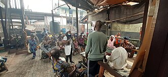

Community
Source Card

Photo

A community is a social unit with a shared socially-significant characteristic(s), being place, set of norms, culture, religion, values, customs, or identity. Communities may share a sense of place situated in a given geographical area or in virtual space through communication platforms. Durable good relations that extend beyond immediate genealogical ties also define a sense of community, important to people's identity, practice, and roles in social institutions such as family, home, work, government, society, or humanity at large. Although communities are usually small relative to personal social ties, "community" may also refer to large-group affiliations such as national communities, international communities, and virtual communities.
External Links
This page aggregates references to the source material behind Name Lore entries.